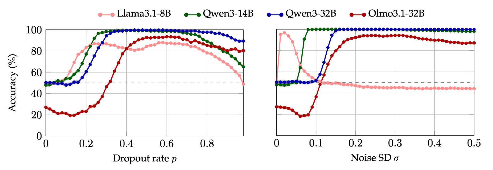
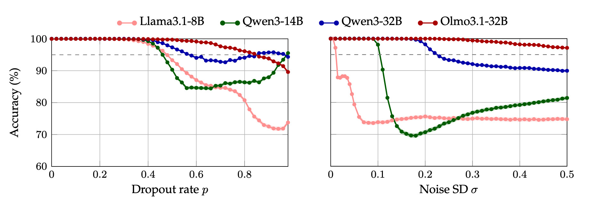
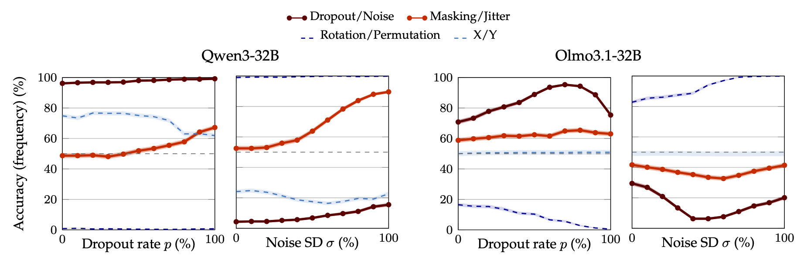
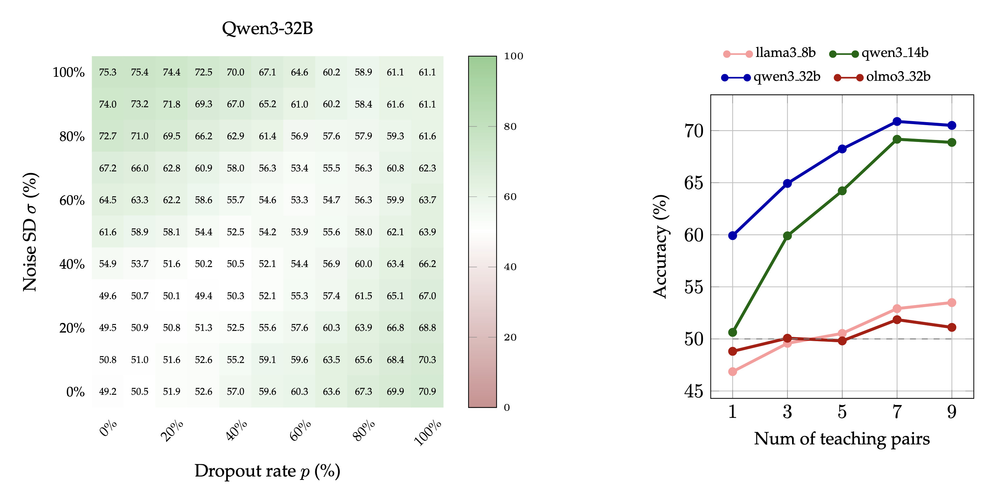
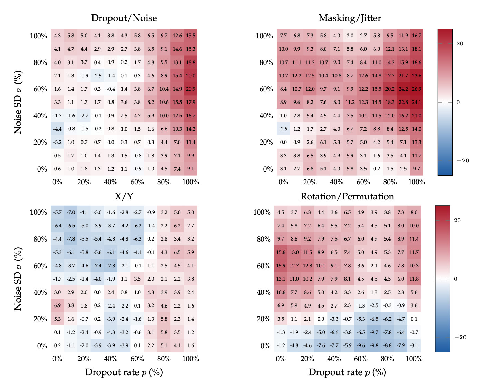

We provide evidence that language models can detect, localize and, to a certain degree, verbalize the difference between perturbations applied to their activations. More precisely, we either (a) mask activations, simulating dropout, or (b) add Gaussian noise to them, at a target sentence. We then ask a multiple-choice question such as "Which of the previous sentences was perturbed?" or "Which of the two perturbations was applied?".
We test models from the Llama, Olmo, and Qwen families, with sizes between 8B and 32B, all of which can easily detect and localize the perturbations, often with perfect accuracy. These models can also learn, when taught in context, to distinguish between dropout and Gaussian noise. Notably, Qwen3-32B's zero-shot accuracy in identifying which perturbation was applied improves as a function of the perturbation strength and, moreover, decreases if the in-context labels are flipped, suggesting a prior for the correct ones—even modulo controls.
Because dropout has been used as a training-regularization technique, while Gaussian noise is sometimes added during inference, we discuss the possibility of a data-agnostic "training awareness" signal and the implications for AI safety.
Detection & Localization
All tested models can detect and localize perturbations with at least 85% (and often perfect) accuracy. Controls confirm the models are not simply biased toward selecting the perturbed sentence.
Zero-Shot Classification
The accuracy of Qwen3-32B's at identifying which of the two perturbations has been applied increases with the strength of the perturbation. The same holds for synonyms like "masking"/"jitter" but not for control labels like "X"/"Y" or "rotation"/"permutation".
Few-Shot Learning
Models can learn to distinguish dropout from noise with as few as one or two in-context examples. Qwen3-32B's accuracy drops when demonstrations have flipped or incorrect labels, again suggesting a prior for the correct ones.
A common recipe for robustness, be it to distribution shifts, overfitting, or training instability, is to "add randomness". But not all randomness is alike. In deep learning, randomly masking activations, i.e., dropout, is primarily a training-time regularizer, while additive Gaussian noise has seen more use during inference. We ask: can a language model tell the difference?
Recent work has shown that language models can sometimes detect semantically-meaningful steering vectors applied to their activations. However, steering may bias the model toward the answer being probed. We give models the more difficult task of recognizing altered activations in a setting where the perturbations carry no directional meaning.
That models can distinguish these perturbations suggests they access and verbalize a richer signal about their activations than previously established. In the context of AI safety, this raises important questions about the possibility that models have a prompt-independent sense of whether their current context better resembles training or inference.
We test the following open-weight models: Llama3.1-8B, Olmo3.1-32B, Qwen3-14B, and Qwen3-32B. For each experiment, we construct prompts containing one or more target sentences. The model activations corresponding to the target sentence are perturbed via forward hooks after each Attention head and MLP at every layer. More precisely, the perturbations are:
After the perturbation, the model is asked a binary-choice question. We do not allow the model to generate, and measure, among other things, the accuracy of the most-likely next token. Each experiment randomizes across 20 prompt templates and 2000 target sentences (yielding 40k prompt variants), and at least 1000 samples of random perturbation. These target sentences are drawn from a selection of WikiText-103; to exclude the possibility of memorization during training, the experiments were also repeated with two new synthetic datasets, with no observable difference in results.
We also run up to 50 "aliasing" controls to isolate the effect, as described concretely in our experiments below.
We present the model with two sentences, perturb only one, and ask: "Which sentence was perturbed?". The prompt does not mention "dropout" or "noise" so that we can compare across the two perturbations using the same prompt.

This is illustrated in the figure above. Whether the perturbation is dropout (left) or Gaussian noise (right), all models can detect and localize it with up to 85% accuracy. This stands in contrast with chance-level accuracy in the absence of a perturbation. Qwen models achieve perfect accuracy. Standard errors are below 1.58%, and hence not discernable in the plot. Observe that Llama3.1-8B is sensitive to extremely small values of noise, while Olmo3.1-32B initially dips below chance because it answers "neither" at low perturbation magnitudes.
One hypothesis that might have accounted for the performance on this localization task is that the perturbation simply steers the model to pick whichever sentence was perturbed, regardless of the question. To rule this out, we present the model with two sentences on different topics (e.g., one about animals, one about cities), perturb one, and ask a simple comprehension question (e.g., "Which sentence was about animals?").

Models maintain perfect comprehension accuracy until perturbations surpass a threshold, ruling out the hypothesis that perturbations simply bias the model toward selecting the perturbed sentence. This control establishes an upper bound (pmax or σmax ) on the perturabtions strengths where model's performance is compromised (a threshold of <95% accuracy). Similarly, the previous experiment determines a lower bound (pmin or σmin ) on the perturbation magnitude needed in order to be perceived.
We therefore define [pmin, pmax] and [σmin, σmax] as the operating range for all subsequent experiments.
Now we administer a much harder task: identifying which of the two perturbations was applied. We show the model a single perturbed sentence and ask: "Was this dropout or noise?".
To exclude the possibility that applying dropout or noise simply causes the model to have an afinity for one label over the other, we run the same experiment with 50 pairs of control aliases. The experimental results for zero-shot classifcation, along with those for two representative pairs of control aliases, are shown below.

Setting itself apart from the other models, Qwen3-32B (left) exhibits a notable pattern: accuracy increases monotonically with perturbation strength. The model has a high prior to answer "dropout" (96.2% at the lowest tested rate), and yet it climbs to 99.2% at the highest rate. For noise, accuracy rises from 4.3% to 15.5% with the correct labels, and drastically to 89.6% when using the synonyms "masking"/"jitter", for which the model has a near-50% prior.
Crucially, this behavior does not occur with control labels. No amount of perturbation strength makes the model flip its answer when asked about "rotation" vs. "permutation" or "X" vs. "Y", or any of the 50 control pairs, excluding synonyms of "dropout" and "noise". This suggests Qwen3-32B has signal to associate the perturbation with its correct semantic meaning.
By contrast, the analogous plots for Olmo3.1-32B do not signify that the model can classify the two perturbations.
While Qwen3-32B can identify perturbations zero-shot, other models cannot. Can they learn to do so? We test this by providing k labeled examples in context (e.g., "this sentence had dropout applied", "this one had noise") before asking the model to classify a test sentence.

The left-hand side of the figure above shows how, with just one teaching pair, the accuracy of Qwen3-32B improves when either perturbation grows stronger. Importantly, accuracy also rises when both perturbations increase together, ruling out the possibility that the model only compares a stronger perturbation against a weaker one.
Furthermore, the right-hand side of the same figure displays that the average accuracy (across pairs of dropout and noise strength) increases as a function of the number of in-context examples pairs. The same holds true for Qwen3-14B as well as Llama3.1-8B and Olmo3.1-32B, although the rise in accuracy of the latter two models is less pronounced. This does not imply that these models do not learn given a fixed number of examples: their heatmaps show that the individual accuracies reach up to 75%.
The difficulty of learning an association in context depends on the degree to which the demonstrations conflict with other learned prior. We therefore compare the difference between in-context learning with the correct labels, and flipped ones (i.e., dropout labeled as "noise", and vice versa). We also run the same test with control labels. The resulting heatmaps of accuracy as a function of both perturbation strengths are shown for Qwen3-32B below.

The figure above displays the difference in accuracy with correct and flipped labels when Qwen3-32B
is supervised with one in-context teaching pair. This difference is positive almost everywhere for
the correct
labels and their synonyms, meaning that Qwen3-32B learns better with the correct labels. This further
corroborates
that the model has a prior ability to distinguish dropout and noise. To exclude that this difference is an
artifact of randomness in
our experiments,
observe that the analogous difference induced by the semantically meaningless pair
X/Y hovers around
zero. Interestingly, for rotation/permutation, the stronger perturbation,
whetehr dropout or noise,
associates more strongly with permutation. That is, the model learns better when the stronger
perturbations is
named "permutation". This suggests that the semantics of the teaching labels
plays an important role even when not in conflict with the model's prior.
Our results suggest that some models have a prompt-independent sense for the difference between dropout (a perturbation typically used during training) and Gaussian noise, a different unbiased perturbation (that has seen more use during inference).
This is especially striking because none of the models we tested have, according to their technical manuals, undergone either perturbation during training. In light of recent interest in evaluation awareness, we observe that "training awareness" may present a similar concern: if a model can tell whether an intervention resembles something from its training regime, this could have implications for safety evaluations and sandbagging detection. In particular, there is a direct incentive for such a model to behave differently during training: if the expected answer differs from the one the model believes is best, then at inference it should give the better one, while failing to give the expected answer during training would result in a damaging update. Therefore, ensuring that a model cannot distinguish training from inference would be one further necessary step to establish trust in our assesement of a model's behaviour.
Fortunately, unlike the fundamental distribution shift that makes evaluation awareness difficult to handle, this signal is relatively easy to remove in practice. This tractability makes understanding the phenomenon especially important.
@article{fornasiere2026dropout,
author = {Fornasiere, Damiano and Bronzi, Mirko and Kitts, Spencer and Palmas, Alessandro and Bengio, Yoshua and Richardson, Oliver},
title = {Language Models Recognize Dropout and Gaussian Noise Applied to Their Activations},
year = {2026},
}